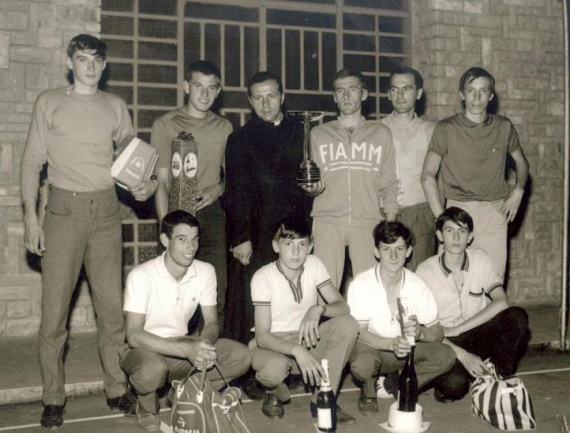
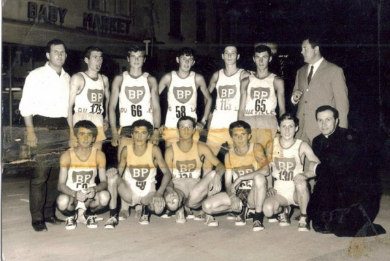
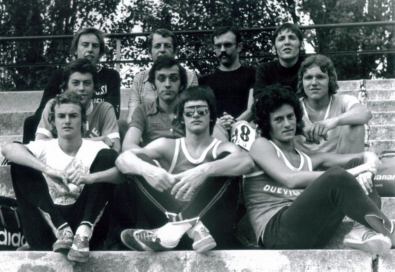
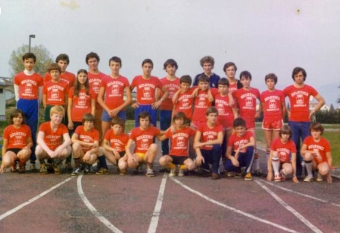

Dueville sorse attorno agli anni 1955/56 una proposta sportiva che coinvolgeva oltre all'atletica, anche il calcio, il tennis, la pallavolo e la pallacanestro. La cittadinanza in piena espansione demografica era seguita dal cappellano locale Don Angelo coadiuvato dal sig.ri Isaia Beldin e Ampelio Bozzo.


La nuova polisportiva che seguiva gli ideali del Centro Sportivo Italiano, continuò negli anni a venire, il suo impegno per coinvolgere sempre più i giovani nel mondo dello sport. Sotto l'attento operato di dirigenti dinamici quali Nazzareno Giaretta, Alfonso Ramina e i fratelli Barbieri e sullo slancio delle olimpiadi romane degli anni 60 il movimento giovanile continuò a crescere. Tra gli atleti di maggior spicco del periodo ricordiamo Bedin, Pietrobelli, Borgo, Luciani, Rizzato, Balasso, Marcazzan, Giaretta e i fratelli Medica.

Agli inizi degli anni 70, dopo che la polisportiva si divise in varie società autonome, l'Atletica Dueville, sotto la presidenza di Nazzareno Giaretta, svolse anche attività federale elevando il suo livello tecnico degli atleti che erano seguiti dall'allenatore Pino Panozzo coadiuvato da molti ex. atleti. Mentre alle competizioni Fidal gli atleti più qualificati aderivano con i colori di altri gruppi sportivi (CSI FIAMM o UNION CREAZZO), l'attività CSI proseguiva sotto l'attenta condotta di Gian Franco Giaretta e Dario Marcazzan. Gli anni 1974/75 videro emergere nel settore del mezzofondo atleti di prestigio come Danilo Grotto, Paolo Medica, Renato Binotto, Bruno Paiusco, Renato Bortoliero, Mauro e Sergio Pesavento assieme ai due fratelli velocisti Boarotto.
Negli anni 1980 l'atletica Dueville fu guidata alla dirigenza da Renato Bortoliero al quale succedettero nell'ordine Antonio Baio e Nereo Tosin.

In questo periodo gli atleti che contribuirono maggiormente a rappresentare i colori Duevillesi nelle vicende agonistiche furono i fratelli Ferdinando e Lino Fontana assieme a Girardello. Tra gli atleti emergenti si stanno mettendo in luce nel mezzofondo Gianni Faccin e Fabio Fioravanzo a cui seguiranno molti altri giovani che segneranno la storia di questo gruppo sportivo.